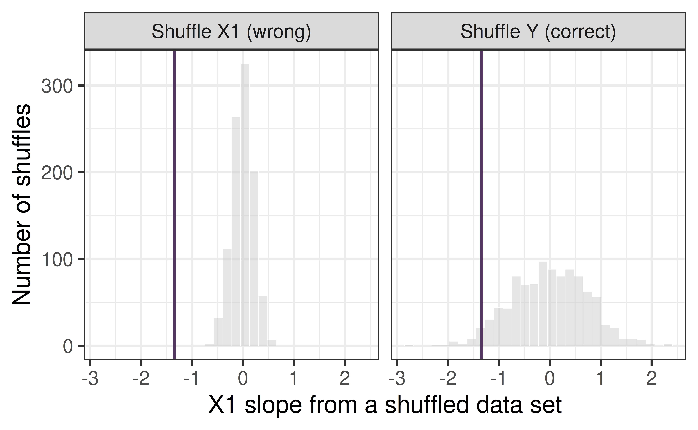

Nested Models and the F-test
Testing a whole batch of coefficients at once
Prof. Eric Friedlander
AE 19 Part 4: discussion
Discussing AE 19 Part 4
Talk with a neighbor about your pilot data:
- What null hypothesis does the p-value for your primary variable in
add_fittest? (Remember: holding the other variables in the model constant.) - Did that p-value change between
simple_fitandadd_fit? Why? What question is each p-value answering?
Categorical predictors
Categorical predictors: tests against a reference level
| term | estimate | std.error | statistic | p.value |
|---|---|---|---|---|
| (Intercept) | 74.356 | 2.950 | 25.207 | 0.000 |
| LocationCityHall | -5.844 | 4.172 | -1.401 | 0.163 |
| LocationPark | 11.511 | 4.172 | 2.759 | 0.006 |
| LocationZoo | -19.067 | 4.172 | -4.571 | 0.000 |
Each Location p-value compares that location with the reference level (Business), not with every other location.
Relevel your factors to get your desired reference level
| term | estimate | std.error | statistic | p.value |
|---|---|---|---|---|
| (Intercept) | 55.289 | 2.950 | 18.744 | 0.000 |
| LocationBusiness | 19.067 | 4.172 | 4.571 | 0.000 |
| LocationCityHall | 13.222 | 4.172 | 3.170 | 0.002 |
| LocationPark | 30.578 | 4.172 | 7.330 | 0.000 |
You might want to do this if you have an experiment with one control (reference level) and multiple treatments.
Review: t-tests in MLR
Where we are
| term | estimate | std.error | statistic | p.value |
|---|---|---|---|---|
| (Intercept) | 93.548 | 16.396 | 5.706 | 0.000 |
| Temperature | -0.620 | 0.274 | -2.262 | 0.025 |
| LocationCityHall | -4.164 | 3.314 | -1.256 | 0.211 |
| LocationPark | 11.484 | 3.230 | 3.556 | 0.000 |
| LocationZoo | -17.634 | 3.291 | -5.358 | 0.000 |
| TimeOfDayLunch | 25.447 | 2.803 | 9.080 | 0.000 |
| TimeOfDayAfternoon | 26.206 | 2.797 | 9.370 | 0.000 |
Each row is a \(t\)-test of \(H_0: \beta_j = 0\) given the other predictors.
Location has three rows (LocationCityHall, LocationPark, LocationZoo). Each compares one location with the Business District. Is there a single p-value that answers “does Location matter at all?”
A correction: what do we shuffle?
Correction: shuffle the response
Last time I said that, to test one coefficient, we shuffle the explanatory variable. That was wrong. We shuffle the response:
- Shuffling
Salesbreaks the link between the response and all of the predictors, but the predictors stay exactly as we observed them, including how they relate to each other. - Shuffling
Temperaturealso breaks the relationship betweenTemperatureandTimeOfDay. The shuffled data sets have predictors that look nothing like ours.
Why might it matter if the shuffled data sets have predictors that are related differently from the real ones?
Does it matter?
A simulated data set where X1 and X2 are highly correlated (\(r = 0.95\)), and the true slope of X1 is 0:
corr_fit <- lm(y ~ x1 + x2, data = corr_data)
set.seed(2026)
shuf_y <- mosaic::do(1000) * lm(mosaic::shuffle(y) ~ x1 + x2, data = corr_data)
shuf_x <- mosaic::do(1000) * lm(y ~ mosaic::shuffle(x1) + x2, data = corr_data)
bind_rows(tibble(method = "Shuffle Y (correct)", slope = shuf_y$x1),
tibble(method = "Shuffle X1 (wrong)", slope = shuf_x[[2]])) |>
gf_histogram(~ slope | method, bins = 30, fill = "grey80", color = "white") |>
gf_vline(xintercept = coef(corr_fit)[["x1"]], color = "#533860", linewidth = 1.2) |>
gf_labs(x = "X1 slope from a shuffled data set", y = "Number of shuffles")
Which null distribution is narrower? What would that do to the p-value? To see why, look at the next two slides.
Correlated predictors: a wobbly plane
X1 and X2 are highly correlated (\(r = 0.95\)). The truth: Y depends on X2 only (true X1 slope = 0).
Click New noise several times (you can also rotate the plot). What does the plane do? How far does the X1 slope stray from 0?
Uncorrelated predictors: a steady plane
Same X1, same noise, same truth, but now X1 and X2 are uncorrelated (\(r = 0\)).
Compare with the last slide. Why does the plane wobble so much less?
Why this matters for shuffling
- When
X1andX2are correlated, the data can’t easily separate their effects: many different planes fit almost equally well. So \(\hat\beta_1\) varies a lot from sample to sample, and its standard error is large. - Shuffling
X1would make it uncorrelated withX2, turning the wobbly picture into the steady one. The null distribution would be too narrow and the p-values too small. - Shuffling
Ykeeps the correlation between the predictors, so the null distribution reflects the wobble we really have.
Shuffle the response.
Testing Batches Of Coefficients
Is Location Important?
| term | estimate | std.error | statistic | p.value |
|---|---|---|---|---|
| (Intercept) | 93.5480 | 16.3961 | 5.7055 | 0.0000 |
| Temperature | -0.6199 | 0.2740 | -2.2622 | 0.0249 |
| LocationCityHall | -4.1638 | 3.3139 | -1.2565 | 0.2106 |
| LocationPark | 11.4836 | 3.2295 | 3.5558 | 0.0005 |
| LocationZoo | -17.6340 | 3.2910 | -5.3582 | 0.0000 |
| TimeOfDayLunch | 25.4470 | 2.8025 | 9.0801 | 0.0000 |
| TimeOfDayAfternoon | 26.2063 | 2.7968 | 9.3700 | 0.0000 |
Don’t really have a way to determine whether the whole variable Location is important…
Nested models
A \(t\)-test checks one coefficient. To test several coefficients at once (like all the Location dummies), we compare two models.
Model A is nested in Model B if B contains every predictor/coefficient in A, plus more. Setting the extra coefficients in B to 0 gives you A.
| This model | is nested in this model | The extra terms |
|---|---|---|
Sales ~ Temperature + TimeOfDay |
Sales ~ Temperature + Location + TimeOfDay |
3 Location dummies |
Sales ~ Location + TimeOfDay |
Sales ~ Location * TimeOfDay |
the interaction terms |
Sales ~ Temperature |
Sales ~ Location |
none: not nested |
When comparing models, we call the smaller model the reduced model and the larger model the full model.
- Why is
Sales ~ Temperaturenot nested inSales ~ Location? - Name a model that
Sales ~ Temperatureis nested in.
The \(F\)-test
- A full model will always result in a higher \(R^2\) and a lower \(SSE\)
- Question: Is the improvement to be worth the extra terms?
We measure fit with the sum of squared errors, \(SSE = \sum (y_i - \hat y_i)^2\):
\[ F = \frac{(SSE_{\text{reduced}} - SSE_{\text{full}}) \,/\, (\text{number of extra coefficients})}{SSE_{\text{full}} \,/\, df_{\text{full}}} \]
- Numerator: the improvement in fit per extra coefficient.
- Denominator: the leftover noise per residual degree of freedom, i.e. \(\hat\sigma_\epsilon^2\) of the full model.
- If the extra terms do nothing, \(F\) is near 1. A large \(F\) means the full model fits much better than we would expect from noise.
\(H_0\): all the extra coefficients are 0 (the reduced model is enough).
\(H_A\): at least one is not 0.
The p-value comes from an \(F\) distribution with (extra coefficients, \(df_{\text{full}}\)) degrees of freedom.
Using anova()
Give anova() the reduced model first, then the full model.
| term | df.residual | rss | df | sumsq | statistic | p.value |
|---|---|---|---|---|---|---|
| Sales ~ Temperature + TimeOfDay | 176 | 59173.55 | NA | NA | NA | NA |
| Sales ~ Temperature + Location + TimeOfDay | 173 | 40597.64 | 3 | 18575.91 | 26.38604 | 0 |
| Column | Meaning |
|---|---|
df.residual/Res.Df |
residual degrees of freedom of each model |
RSS |
the sum of squared errors (\(SSE\)) of each model. R labels it “residual sum of squares” |
df |
number of extra coefficients in the full model |
Sum of Sq |
\(SSE_{\text{reduced}} - SSE_{\text{full}}\) |
statistics and p.value/F and Pr(>F) |
the test statistic and its p-value |
How many extra coefficients does full have? Check that Sum of Sq equals the difference in the two RSS values.
One test for a whole variable
Does Location matter at all, after accounting for Temperature and TimeOfDay? That is the anova(reduced, full) comparison we just ran.
- \(H_0\): all
Locationcoefficients are 0. - A small p-value says at least one location differs, but not which. For that, look at the individual \(t\)-tests (the reference-level comparisons).
What do you conclude about Location? What would you conclude if the p-value were 0.6?
F-Test = T-Test for One Coefficient
| term | estimate | std.error | statistic | p.value |
|---|---|---|---|---|
| (Intercept) | 122.453439 | 19.0300619 | 6.434737 | 0.0000000 |
| Temperature | -1.142914 | 0.3136588 | -3.643814 | 0.0003533 |
| TimeOfDayLunch | 25.107106 | 3.3539049 | 7.485932 | 0.0000000 |
| TimeOfDayAfternoon | 26.197618 | 3.3477066 | 7.825542 | 0.0000000 |
Exactly the same!
P-values and interaction
Do we need the interaction?
| term | estimate | std.error | statistic | p.value |
|---|---|---|---|---|
| (Intercept) | 87.2205966 | 41.4288759 | 2.1053093 | 0.0381810 |
| LocationCityHall | -10.6226164 | 58.4856136 | -0.1816279 | 0.8563022 |
| Temperature | -0.2190416 | 0.7039482 | -0.3111615 | 0.7564308 |
| LocationCityHall:Temperature | 0.0874289 | 0.9721659 | 0.0899320 | 0.9285503 |
- The interaction p-value tests: “does the effect of one variable depend on the other?”
- Main-effect p-values become hard to interpret and can safely be ignored… Once interaction is important, both variables that are interacting must also be important.
- Keep both main effects in the model whenever you keep their interaction.
Interpret this p-value in context. What would you tell Jo?
P-values in the interaction model
| term | estimate | std.error | statistic | p.value |
|---|---|---|---|---|
| (Intercept) | 74.533 | 3.154 | 23.630 | 0.000 |
| LocationCityHall | -29.400 | 4.461 | -6.591 | 0.000 |
| LocationPark | -3.600 | 4.461 | -0.807 | 0.421 |
| LocationZoo | -50.533 | 4.461 | -11.329 | 0.000 |
| TimeOfDayLunch | -3.267 | 4.461 | -0.732 | 0.465 |
| TimeOfDayAfternoon | 2.733 | 4.461 | 0.613 | 0.541 |
| LocationCityHall:TimeOfDayLunch | 47.667 | 6.308 | 7.556 | 0.000 |
| LocationPark:TimeOfDayLunch | 18.333 | 6.308 | 2.906 | 0.004 |
| LocationZoo:TimeOfDayLunch | 50.467 | 6.308 | 8.000 | 0.000 |
| LocationCityHall:TimeOfDayAfternoon | 23.000 | 6.308 | 3.646 | 0.000 |
| LocationPark:TimeOfDayAfternoon | 27.000 | 6.308 | 4.280 | 0.000 |
| LocationZoo:TimeOfDayAfternoon | 43.933 | 6.308 | 6.964 | 0.000 |
This case has MULTIPLE interactions terms for the same two variables… How can we test them all at once?
“Not significant” is not “no effect”
| term | estimate | std.error | statistic | p.value |
|---|---|---|---|---|
| (Intercept) | 67.50 | 6.689 | 10.092 | 0.000 |
| LocationCityHall | 22.75 | 9.459 | 2.405 | 0.053 |
The full Lunch data showed a difference of about 18 cups. With 4 days per location, the p-value is large.
Does a large p-value mean City Hall and the Business District sell the same amount? What went wrong? (Hint: Lessons 14-16.)
Caution: Collecting more data because you didn’t get the result you were hoping for is bad practice. It typically means you had a poorly designed study. If you only collect more data when you don’t get a significant result, you are biasing your analyses.
Activity: AE 20
Paste in your code from AE 19 (loading your data and fitting simple_fit, add_fit, and int_fit), then:
- Decide which of your models are nested.
- Use
anova()to test whether your second variable matters, and whether the interaction matters. - Think about small samples and multiple tests.
Recap
- Model A is nested in Model B if B has every term in A plus more.
- The \(F\)-test compares the sum of squared errors of a reduced and a full model: is the improvement more than noise?
- Use
anova(reduced, full)to test a whole variable, or an interaction, at once. - With an interaction, main-effect p-values are conditional, and the interaction p-value asks whether the effect depends on the other variable.
- Many tests mean many chances for false positives: name your primary hypothesis in advance.
- A large p-value with a small sample is not evidence of no effect.
Coming next
A p-value only tells us whether a coefficient could be 0. It does not tell us how big the effect is, or how precisely we have estimated it.
Jo’s data say City Hall sells about 18 more cups at Lunch. How sure are we about that number?
Next time: confidence intervals.